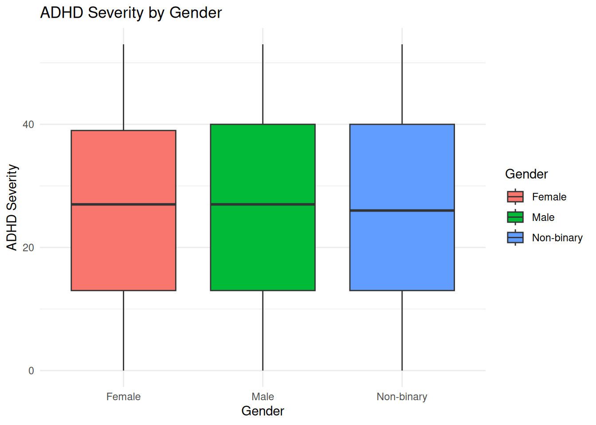
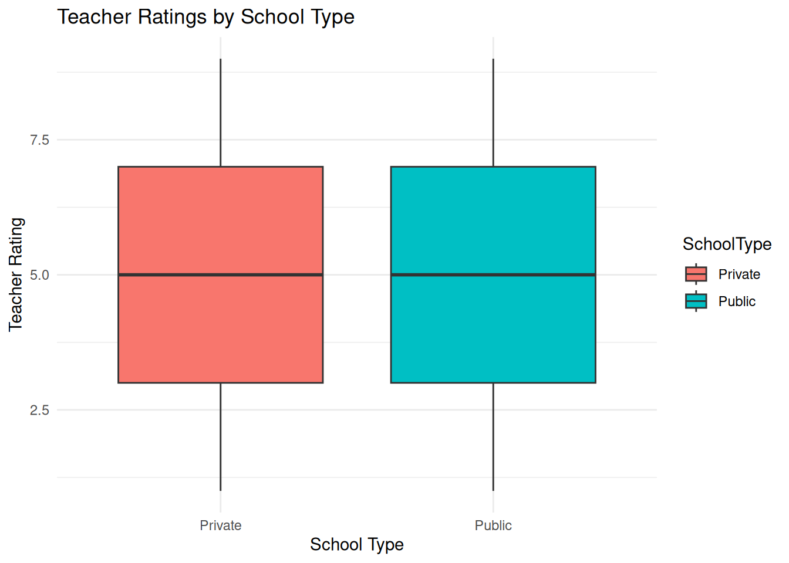
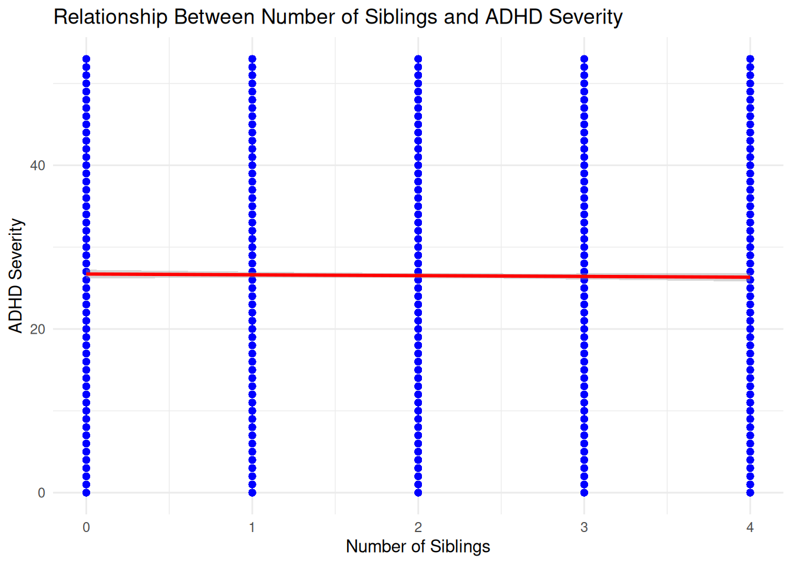

── Attaching core tidyverse packages ──────────────────────── tidyverse 2.0.0 ──
✔ dplyr 1.1.4 ✔ readr 2.1.5
✔ forcats 1.0.0 ✔ stringr 1.5.1
✔ ggplot2 3.5.1 ✔ tibble 3.2.1
✔ lubridate 1.9.3 ✔ tidyr 1.3.1
✔ purrr 1.0.2
── Conflicts ────────────────────────────────────────── tidyverse_conflicts() ──
✖ dplyr::filter() masks stats::filter()
✖ dplyr::lag() masks stats::lag()
ℹ Use the conflicted package (<http://conflicted.r-lib.org/>) to force all conflicts to become errors
library(dplyr)library(ggplot2)library(car)
Loading required package: carData
Attaching package: 'car'
The following object is masked from 'package:dplyr':
recode
The following object is masked from 'package:purrr':
some
library(stats)
Hypothesis Statement
Quarto enables you to weave together content and executable code into a finished document. To learn more about Quarto see https://quarto.org.
ggplot(data, aes(x = Gender, y = ADHDSeverity, fill = Gender)) +geom_boxplot() +labs(title ="ADHD Severity by Gender",x ="Gender",y ="ADHD Severity") +theme_minimal()

# Check assumptions for ANOVA# 1. Test for normality using Shapiro-Wilk testks.test(data$Inattention, "pnorm", mean =mean(data$Inattention, na.rm =TRUE), sd =sd(data$Inattention, na.rm =TRUE))
Warning in ks.test.default(data$Inattention, "pnorm", mean =
mean(data$Inattention, : ties should not be present for the Kolmogorov-Smirnov
test
Asymptotic one-sample Kolmogorov-Smirnov test
data: data$Inattention
D = 0.077992, p-value < 2.2e-16
alternative hypothesis: two-sided
ks.test(data$Hyperactivity, "pnorm", mean =mean(data$Hyperactivity, na.rm =TRUE), sd =sd(data$Hyperactivity, na.rm =TRUE))
Warning in ks.test.default(data$Hyperactivity, "pnorm", mean =
mean(data$Hyperactivity, : ties should not be present for the
Kolmogorov-Smirnov test
Asymptotic one-sample Kolmogorov-Smirnov test
data: data$Hyperactivity
D = 0.07785, p-value < 2.2e-16
alternative hypothesis: two-sided
ks.test(data$ADHDSeverity, "pnorm", mean =mean(data$ADHDSeverity, na.rm =TRUE), sd =sd(data$ADHDSeverity, na.rm =TRUE))
Warning in ks.test.default(data$ADHDSeverity, "pnorm", mean =
mean(data$ADHDSeverity, : ties should not be present for the Kolmogorov-Smirnov
test
Asymptotic one-sample Kolmogorov-Smirnov test
data: data$ADHDSeverity
D = 0.068048, p-value < 2.2e-16
alternative hypothesis: two-sided
# Visualize distributionshist(data$Inattention, breaks =30, main ="Histogram of Inattention", xlab ="Inattention", col ="blue")
qqnorm(data$Inattention)qqline(data$Inattention, col ="red")
hist(data$Hyperactivity, breaks =30, main ="Histogram of Hyperactivity", xlab ="Hyperactivity", col ="blue")
qqnorm(data$Hyperactivity)qqline(data$Hyperactivity, col ="red")
hist(data$ADHDSeverity, breaks =30, main ="Histogram of ADHDSeverity", xlab ="ADHDSeverity", col ="blue")
qqnorm(data$ADHDSeverity)qqline(data$ADHDSeverity, col ="red")
The p-values for all three variables are much greater than 0.05, indicating no statistically significant differences in Inattention, Hyperactivity, or ADHDSeverity across gender groups. This suggests that gender does not have a significant impact on ADHD severity scores in your dataset.
Hypothesis 2: Family history of ADHD correlates with ADHD severity in children
# Kruskal-Wallis test for ADHD Severity measureskruskal_inattention <-kruskal.test(Inattention ~ Gender, data = data)kruskal_hyperactivity <-kruskal.test(Hyperactivity ~ Gender, data = data)kruskal_overall <-kruskal.test(ADHDSeverity ~ Gender, data = data)# Display resultskruskal_inattention
Kruskal-Wallis rank sum test
data: Inattention by Gender
Kruskal-Wallis chi-squared = 0.01288, df = 2, p-value = 0.9936
kruskal_hyperactivity
Kruskal-Wallis rank sum test
data: Hyperactivity by Gender
Kruskal-Wallis chi-squared = 0.71719, df = 2, p-value = 0.6987
kruskal_overall
Kruskal-Wallis rank sum test
data: ADHDSeverity by Gender
Kruskal-Wallis chi-squared = 2.1178, df = 2, p-value = 0.3468
Hypothesis 3: The relationship between parenting style and ADHD severity Now we proceed to examine the effect of family history:
ggplot(data, aes(x = FamilyADHDHistory, y = ADHDSeverity, fill = FamilyADHDHistory)) +geom_boxplot() +labs(title ="ADHD Severity by Family History of ADHD",x ="Family History of ADHD",y ="ADHD Severity" ) +theme_minimal()
wilcox_test <-wilcox.test( ADHDSeverity ~ FamilyADHDHistory,data = data,exact =FALSE# Use exact=FALSE for large datasets)wilcox_test
Wilcoxon rank sum test with continuity correction
data: ADHDSeverity by FamilyADHDHistory
W = 12613465, p-value = 0.4291
alternative hypothesis: true location shift is not equal to 0
This indicates no statistically significant difference in ADHD severity scores between children with and without a family history of ADHD.
Hypothesis 4: The role of parental involvement in education in ADHD symptom severity
# Visualize ADHD severity by ParentingStyleggplot(data, aes(x = ParentingStyle, y = ADHDSeverity, fill = ParentingStyle)) +geom_boxplot() +labs(title ="ADHD Severity by Parenting Style",x ="Parenting Style",y ="ADHD Severity" ) +theme_minimal()
# Kruskal-Wallis test for ADHDSeverity by ParentingStylekruskal_test <-kruskal.test(ADHDSeverity ~ ParentingStyle, data = data)# Display Kruskal-Wallis test resultskruskal_test
Kruskal-Wallis rank sum test
data: ADHDSeverity by ParentingStyle
Kruskal-Wallis chi-squared = 1.7057, df = 2, p-value = 0.4262
if (kruskal_test$p.value <0.05) { dunn_test <-dunnTest(ADHDSeverity ~ ParentingStyle, data = data, method ="bonferroni") dunn_test}
# Visualize ADHD severity by parental involvementggplot(data, aes(x = ParentalInvolvement, y = ADHDSeverity, fill = ParentalInvolvement)) +geom_boxplot() +labs(title ="ADHD Severity by Parental Involvement",x ="Parental Involvement",y ="ADHD Severity" ) +theme_minimal()
# Kruskal-Wallis test for ADHDSeverity by ParentalInvolvementkruskal_test <-kruskal.test(ADHDSeverity ~ ParentalInvolvement, data = data)# Display Kruskal-Wallis test resultskruskal_test
Kruskal-Wallis rank sum test
data: ADHDSeverity by ParentalInvolvement
Kruskal-Wallis chi-squared = 3.9011, df = 2, p-value = 0.1422
# Post-hoc Dunn's test if Kruskal-Wallis is significantif (kruskal_test$p.value <0.05) { dunn_test <-dunnTest(ADHDSeverity ~ ParentalInvolvement, data = data, method ="bonferroni") dunn_test}# Spearman rank correlation for ordinal parental involvementspearman_corr <-cor.test(as.numeric(data$ParentalInvolvement), data$ADHDSeverity,method ="spearman")
Warning in cor.test.default(as.numeric(data$ParentalInvolvement),
data$ADHDSeverity, : Cannot compute exact p-value with ties
Spearman's rank correlation rho
data: as.numeric(data$ParentalInvolvement) and data$ADHDSeverity
S = 1.6833e+11, p-value = 0.3172
alternative hypothesis: true rho is not equal to 0
sample estimates:
rho
-0.01000241
The p-value is greater than 0.05, indicating no statistically significant differences in ADHD severity across the levels of parental involvement (Low, Moderate, High). The correlation coefficient is very close to zero, suggesting a negligible relationship between parental involvement and ADHD severity. The p-value is greater than 0.05, indicating the correlation is not statistically significant.
Hypothesis 5: Comorbid conditions influence the severity of ADHD symptoms
data$ComorbidConditions <-as.factor(data$ComorbidConditions)# Summary statistics for ADHD severity by comorbid conditionsdata %>%group_by(ComorbidConditions) %>%summarise(Mean_ADHDSeverity =mean(ADHDSeverity, na.rm =TRUE),Median_ADHDSeverity =median(ADHDSeverity, na.rm =TRUE),Count =n() )
# Visualize ADHD severity by comorbid conditionsggplot(data, aes(x = ComorbidConditions, y = ADHDSeverity, fill = ComorbidConditions)) +geom_boxplot() +labs(title ="ADHD Severity by Comorbid Conditions",x ="Comorbid Conditions",y ="ADHD Severity" ) +theme_minimal() +theme(axis.text.x =element_text(angle =45, hjust =1))
# Kruskal-Wallis test for ADHDSeverity by ComorbidConditionskruskal_test <-kruskal.test(ADHDSeverity ~ ComorbidConditions, data = data)# Display Kruskal-Wallis test resultskruskal_test
Kruskal-Wallis rank sum test
data: ADHDSeverity by ComorbidConditions
Kruskal-Wallis chi-squared = 3.4689, df = 4, p-value = 0.4826
# Post-hoc Dunn's test if Kruskal-Wallis is significantif (kruskal_test$p.value <0.05) { dunn_test <-dunnTest(ADHDSeverity ~ ComorbidConditions, data = data, method ="bonferroni") dunn_test}
Hypothesis 6: The influence of IQ score on ADHD severity
Spearman's rank correlation rho
data: data$IQScore and data$ADHDSeverity
S = 1.6488e+11, p-value = 0.283
alternative hypothesis: true rho is not equal to 0
sample estimates:
rho
0.01073604
# Fit a linear regression modellm_model <-lm(ADHDSeverity ~ IQScore, data = data)# Display linear regression summarysummary(lm_model)
Call:
lm(formula = ADHDSeverity ~ IQScore, data = data)
Residuals:
Min 1Q Median 3Q Max
-26.8021 -13.4585 0.3411 13.3636 26.7624
Coefficients:
Estimate Std. Error t value Pr(>|t|)
(Intercept) 25.583104 0.887369 28.830 <2e-16 ***
IQScore 0.008181 0.007629 1.072 0.284
---
Signif. codes: 0 '***' 0.001 '**' 0.01 '*' 0.05 '.' 0.1 ' ' 1
Residual standard error: 15.51 on 9998 degrees of freedom
Multiple R-squared: 0.000115, Adjusted R-squared: 1.501e-05
F-statistic: 1.15 on 1 and 9998 DF, p-value: 0.2836
# Visualize the relationship with a scatter plot and regression lineggplot(data, aes(x = IQScore, y = ADHDSeverity)) +geom_point(alpha =0.6, color ="blue") +geom_smooth(method ="lm", se =TRUE, color ="red") +labs(title ="Relationship Between IQ Score and ADHD Severity",x ="IQ Score",y ="ADHD Severity" ) +theme_minimal()
`geom_smooth()` using formula = 'y ~ x'
The correlation coefficient is very close to 0, indicating an extremely weak relationship between IQ scores and ADHD severity. The p-value (p=0.283) is greater than 0.05, suggesting that the relationship is not statistically significant.The effect size (slope) is negligible, and the model explains almost none of the variation in ADHD severity.
Hypothesis 7: Domestic violence history affects ADHD symptoms - Test: Investigate whether a history of domestic violence in the household is associated with more severe ADHD symptoms.
# Visualize ADHD severity by domestic violence historyggplot(data, aes(x = DomesticViolence, y = ADHDSeverity, fill = DomesticViolence)) +geom_boxplot() +labs(title ="ADHD Severity by Domestic Violence History",x ="Domestic Violence History",y ="ADHD Severity" ) +theme_minimal()
# Wilcoxon rank-sum test (Mann-Whitney U Test) for ADHDSeveritywilcox_test_dv <-wilcox.test( ADHDSeverity ~ DomesticViolence,data = data,exact =FALSE)# Display Wilcoxon test resultswilcox_test_dv
Wilcoxon rank sum test with continuity correction
data: ADHDSeverity by DomesticViolence
W = 12427180, p-value = 0.6229
alternative hypothesis: true location shift is not equal to 0
Hypothesis 8: The effect of school type (private vs public) on teacher ratings of behavior - Test: Compare teacher ratings of behavior between students attending private and public schools to see if school type impacts behavioral assessments.
# Ensure SchoolType is a factordata$SchoolType <-as.factor(data$SchoolType)# Summary statistics for teacher ratings by school typedata %>%group_by(SchoolType) %>%summarise(Mean_TeacherRating =mean(TeacherRating, na.rm =TRUE),Median_TeacherRating =median(TeacherRating, na.rm =TRUE),Count =n() )
# Visualize teacher ratings by school typeggplot(data, aes(x = SchoolType, y = TeacherRating, fill = SchoolType)) +geom_boxplot() +labs(title ="Teacher Ratings by School Type",x ="School Type",y ="Teacher Rating" ) +theme_minimal()

# Wilcoxon rank-sum test (Mann-Whitney U Test) for TeacherRatingwilcox_test_school <-wilcox.test( TeacherRating ~ SchoolType,data = data,exact =FALSE)# Display Wilcoxon test resultswilcox_test_school
Wilcoxon rank sum test with continuity correction
data: TeacherRating by SchoolType
W = 12662678, p-value = 0.2528
alternative hypothesis: true location shift is not equal to 0
Hypothesis 9: Number of siblings affects ADHD symptoms - Test: Examine if having more or fewer siblings is associated with changes in ADHD symptom severity or social skills assessments
# Spearman's rank correlation for NumSiblings and ADHDSeverityspearman_corr_adhd <-cor.test( data$NumSiblings, data$ADHDSeverity,method ="spearman")
Warning in cor.test.default(data$NumSiblings, data$ADHDSeverity, method =
"spearman"): Cannot compute exact p-value with ties
# Spearman's rank correlation for NumSiblings and SocialSkillsspearman_corr_social <-cor.test( data$NumSiblings, data$SocialSkills,method ="spearman")
Warning in cor.test.default(data$NumSiblings, data$SocialSkills, method =
"spearman"): Cannot compute exact p-value with ties
Spearman's rank correlation rho
data: data$NumSiblings and data$ADHDSeverity
S = 1.6815e+11, p-value = 0.3729
alternative hypothesis: true rho is not equal to 0
sample estimates:
rho
-0.008912059
spearman_corr_social
Spearman's rank correlation rho
data: data$NumSiblings and data$SocialSkills
S = 1.6922e+11, p-value = 0.1253
alternative hypothesis: true rho is not equal to 0
sample estimates:
rho
-0.01533101
# Linear regression for NumSiblings predicting ADHDSeveritylm_adhd <-lm(ADHDSeverity ~ NumSiblings, data = data)summary(lm_adhd)
Call:
lm(formula = ADHDSeverity ~ NumSiblings, data = data)
Residuals:
Min 1Q Median 3Q Max
-26.7153 -13.4227 0.3822 13.3822 26.6749
Coefficients:
Estimate Std. Error t value Pr(>|t|)
(Intercept) 26.71530 0.26851 99.50 <2e-16 ***
NumSiblings -0.09755 0.10954 -0.89 0.373
---
Signif. codes: 0 '***' 0.001 '**' 0.01 '*' 0.05 '.' 0.1 ' ' 1
Residual standard error: 15.51 on 9998 degrees of freedom
Multiple R-squared: 7.931e-05, Adjusted R-squared: -2.071e-05
F-statistic: 0.793 on 1 and 9998 DF, p-value: 0.3732
# Linear regression for NumSiblings predicting SocialSkillslm_social <-lm(SocialSkills ~ NumSiblings, data = data)summary(lm_social)
Call:
lm(formula = SocialSkills ~ NumSiblings, data = data)
Residuals:
Min 1Q Median 3Q Max
-4.0924 -2.0644 -0.0365 1.9914 4.0193
Coefficients:
Estimate Std. Error t value Pr(>|t|)
(Intercept) 5.09236 0.04468 113.964 <2e-16 ***
NumSiblings -0.02792 0.01823 -1.531 0.126
---
Signif. codes: 0 '***' 0.001 '**' 0.01 '*' 0.05 '.' 0.1 ' ' 1
Residual standard error: 2.581 on 9998 degrees of freedom
Multiple R-squared: 0.0002345, Adjusted R-squared: 0.0001345
F-statistic: 2.345 on 1 and 9998 DF, p-value: 0.1257
# Visualization: NumSiblings vs ADHDSeverityggplot(data, aes(x = NumSiblings, y = ADHDSeverity)) +geom_point(alpha =0.6, color ="blue") +geom_smooth(method ="lm", se =TRUE, color ="red") +labs(title ="Relationship Between Number of Siblings and ADHD Severity",x ="Number of Siblings",y ="ADHD Severity" ) +theme_minimal()
`geom_smooth()` using formula = 'y ~ x'

# Visualization: NumSiblings vs SocialSkillsggplot(data, aes(x = NumSiblings, y = SocialSkills)) +geom_point(alpha =0.6, color ="green") +geom_smooth(method ="lm", se =TRUE, color ="red") +labs(title ="Relationship Between Number of Siblings and Social Skills",x ="Number of Siblings",y ="Social Skills" ) +theme_minimal()